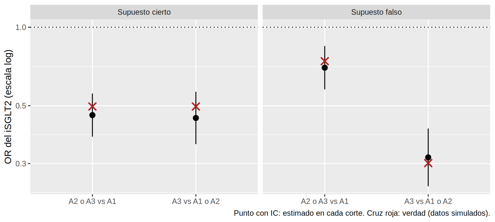
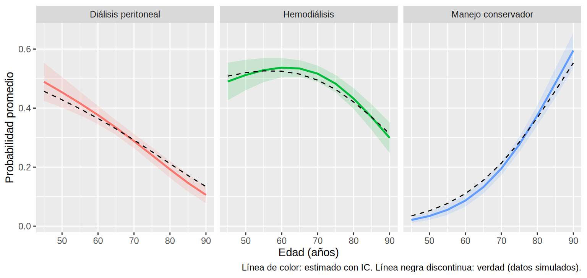

Regresión ordinal, multinomial y binomial negativa
En tu consulta de ERC miras la albuminuria a 12 meses y la clasificas en A1, A2 o A3. Colapsarla en “mejoró / no mejoró” tira información; tratarla como número (UACR) la distorsiona. Otro día, la unidad debe prever cuántos pacientes con ERC G5 irán a hemodiálisis, diálisis peritoneal o manejo conservador: tres opciones sin orden. Y la enfermera de enlace te pregunta si su programa reduce los ingresos hospitalarios en hemodiálisis: un conteo con pacientes que ingresan mucho más que otros. Tres desenlaces, tres modelos que completan los del 8.3.
Lo que vamos a hacer
- Ajustar un modelo de odds proporcionales para un desenlace ordinal, interpretar su OR común y comprobar el supuesto (y qué hacer si falla).
- Ajustar una regresión multinomial para un desenlace nominal y traducirla a probabilidades y diferencias de probabilidad con
marginaleffects. - Comparar Poisson, cuasi-Poisson y binomial negativa en conteos con sobredispersión, y cerrar con una tabla de “qué modelo para qué desenlace”.
Todos los datos de este subcapítulo son simulados (no provienen de pacientes reales) y tienen verdad conocida: los simuladores están en R/simular_cap87.R.
Paso 1. Desenlace ordinal: odds proporcionales
La idea
Un desenlace ordinal tiene categorías con orden (A1 < A2 < A3) pero sin distancias conocidas. El modelo más usado es el de odds proporcionales (proportional odds, o logit acumulado): en vez de una sola logística, “corta” el desenlace en cada punto (A1 vs. A2-A3; A1-A2 vs. A3) y fuerza un único OR para todos los cortes:
\[ \operatorname{logit} P(Y \le k) = \theta_k - (\beta_1 X_1 + \dots + \beta_p X_p) \qquad \Rightarrow \qquad \text{OR común} = e^{\beta} \]
Hay un umbral (\(\theta_k\)) por corte y un coeficiente por variable. Es un modelo económico, pero con un supuesto que hay que revisar (Paso 2).
Los datos
Simulamos 2000 pacientes con ERC y diabetes: la categoría de albuminuria a 12 meses depende de la HbA1c, la PAS, la ECV y la edad, y de iSGLT2, que reduce las odds de una categoría superior con OR verdadero = 0.50 en ambos cortes. La indicación del iSGLT2 depende solo de covariables medidas, así que no hay confusión oculta.
El modelo con MASS::polr
OR.isglt2 2.5 % 97.5 %
0.455 0.382 0.541 Qué vemos. El OR del iSGLT2 es 0.45 (IC 0.38-0.54); la verdad es 0.50, dentro del IC. Se lee así: con iSGLT2, las odds de estar en una categoría de albuminuria más alta (A2 o A3 en vez de A1, y también A3 en vez de A1 o A2) se multiplican por 0.45, a igualdad de las demás covariables. Dicho al revés: las odds de estar en una categoría menor son 2.20 veces mayores. Un solo número para todos los cortes. El paquete ordinal ajusta el mismo modelo con ordinal::clm(); lo usaremos en el Paso 2 para probar el supuesto.
Del OR a lo clínicamente legible: probabilidades por categoría
Un OR de 0.45 no dice cuántos pacientes pasan a A1. Con avg_predictions() obtenemos la probabilidad promedio de cada categoría si todos recibieran el fármaco y si ninguno (estandarización, como en 8.3), y la comparamos con la verdad:
verdad_alb <- bind_rows(
tibble(isglt2 = 0, group = c("A1", "A2", "A3"), verdad = colMeans(prob_alb_verdad(alb_po, 0))),
tibble(isglt2 = 1, group = c("A1", "A2", "A3"), verdad = colMeans(prob_alb_verdad(alb_po, 1))))
pred_alb <- avg_predictions(m_po, by = "isglt2") |> as_tibble() |>
select(group, isglt2, estimate, conf.low, conf.high) |>
left_join(verdad_alb, by = c("group", "isglt2")) |>
mutate(across(where(is.numeric), \(x) round(x, 3)))
pred_alb# A tibble: 6 × 6
group isglt2 estimate conf.low conf.high verdad
<chr> <dbl> <dbl> <dbl> <dbl> <dbl>
1 A1 0 0.384 0.356 0.412 0.381
2 A1 1 0.517 0.488 0.546 0.542
3 A2 0 0.355 0.333 0.377 0.352
4 A2 1 0.312 0.291 0.333 0.3
5 A3 0 0.261 0.237 0.285 0.266
6 A3 1 0.171 0.151 0.19 0.157Qué vemos. La probabilidad de A3 pasa de 0.26 (sin iSGLT2) a 0.17 (con iSGLT2); la verdad es 0.27 y 0.16. Esto sí se puede contar en sesión clínica: “de cada 100 pacientes, unos 9 menos terminarían en A3”.
Paso 2. ¿Se cumplen las odds proporcionales?
El OR común es una promesa: que el efecto del fármaco sea el mismo en cada corte. Dos formas de comprobarla.
Mirada rápida. Ajusta una logística por corte y compara los OR. Lo hacemos en dos mundos simulados: en el primero (el de arriba) el supuesto es cierto; en el segundo el iSGLT2 actúa poco sobre “A1 vs. más” (OR verdadero 0.74) y mucho sobre “A3 vs. menos” (OR verdadero 0.30).
alb_nopo <- simular_albuminuria(semilla = 88, beta_trat = c(-0.3, -1.2)) # SIMULADO: supuesto falso
chequeo <- bind_rows(
`Supuesto cierto` = or_por_corte(alb_po) |> mutate(verdad = exp(c(-0.7, -0.7))),
`Supuesto falso` = or_por_corte(alb_nopo) |> mutate(verdad = exp(c(-0.3, -1.2))),
.id = "mundo")
ggplot(chequeo, aes(corte, or)) +
geom_hline(yintercept = 1, linetype = 3) +
geom_pointrange(aes(ymin = inf, ymax = sup)) +
geom_point(aes(y = verdad), shape = 4, size = 3, stroke = 1.2, colour = "firebrick") +
scale_y_log10() + facet_wrap(~ mundo) +
labs(x = NULL, y = "OR del iSGLT2 (escala log)",
caption = "Punto con IC: estimado en cada corte. Cruz roja: verdad (datos simulados).")
or_c <- chequeo |> filter(mundo == "Supuesto falso")Qué vemos. A la izquierda, los dos OR son casi iguales y la cruz (verdad) cae dentro de cada IC: un OR común es razonable. A la derecha, los OR son distintos (0.70 y 0.32) y la cruz roja confirma que son diferentes de verdad: el efecto del fármaco se concentra en frenar el paso a A3.
La prueba formal. Es una razón de verosimilitud entre el modelo de odds proporcionales y uno más flexible donde cada variable puede tener un OR distinto por corte. ordinal::nominal_test() la calcula variable por variable (sustituye al test de Brant, que aquí no está instalado):
f_alb <- alb12 ~ isglt2 + I(edad / 10) + hba1c + pas + ecv
clm_po <- ordinal::clm(f_alb, data = alb_po)
clm_nopo <- ordinal::clm(f_alb, data = alb_nopo)
nt_po <- ordinal::nominal_test(clm_po)
nt_nopo <- ordinal::nominal_test(clm_nopo)
nt_nopo # prueba en el mundo con supuesto falsoTests of nominal effects
formula: alb12 ~ isglt2 + I(edad/10) + hba1c + pas + ecv
Df logLik AIC LRT Pr(>Chi)
<none> -2011.0 4035.9
isglt2 1 -1990.4 3996.8 41.115 1.436e-10 ***
I(edad/10) 1 -2011.0 4037.9 0.003 0.957992
hba1c 1 -2008.6 4033.1 4.833 0.027916 *
pas 1 -2009.6 4035.2 2.738 0.098006 .
ecv 1 -2006.1 4028.2 9.716 0.001827 **
---
Signif. codes: 0 '***' 0.001 '**' 0.01 '*' 0.05 '.' 0.1 ' ' 1c(`supuesto cierto: p de isglt2` = nt_po["isglt2", "Pr(>Chi)"],
`supuesto falso: p de isglt2` = nt_nopo["isglt2", "Pr(>Chi)"])supuesto cierto: p de isglt2 supuesto falso: p de isglt2
7.113587e-01 1.435618e-10 Qué vemos. (De paso: clm() da para isglt2 el mismo OR que polr, 0.45.) Con el supuesto cierto, la p para el iSGLT2 es 0.71 (sin evidencia contra las odds proporcionales). Con el supuesto falso, la prueba lo detecta para isglt2 (p < 0.001). Fíjate en que en el segundo mundo la prueba también marca otras covariables (ecv, p = 0.0018) aunque el simulador da a ecv el mismo efecto en todos los cortes: es un falso positivo de este conjunto de datos. Con varias pruebas a la vez alguna sale “significativa” por azar, así que mira primero la variable que te importa y el tamaño de la diferencia entre cortes, no solo la p.
Si el supuesto falla: tres salidas
-
Odds proporcionales parciales: dejar un OR por corte solo para la variable problemática y mantener común el resto. Con
VGAM::vglm()(parallel = FALSE ~ isglt2), o conordinal::clm(nominal = ~ isglt2). - Dicotomizar en el corte clínicamente relevante (aquí, A3 vs. resto) y usar una logística: pierdes información, pero la pregunta queda clara.
- Multinomial (Paso 3): sin orden y sin supuesto, a costa de más parámetros.
La primera salida recupera la verdad que el OR común promedia mal:
pp <- VGAM::vglm(f_alb, VGAM::cumulative(parallel = FALSE ~ isglt2, reverse = TRUE), data = alb_nopo)
po <- VGAM::vglm(f_alb, VGAM::cumulative(parallel = TRUE, reverse = TRUE), data = alb_nopo)
or_parcial <- exp(coef(pp)[c("isglt2:1", "isglt2:2")]) # un OR por corte (A2+ y A3)
or_comun <- exp(coef(po)["isglt2"]) # OR común (forzado)
lrt_pp <- VGAM::lrtest(pp, po)
rbind(parcial = or_parcial, verdad = exp(c(-0.3, -1.2))) isglt2:1 isglt2:2
parcial 0.6925462 0.3100311
verdad 0.7408182 0.3011942Qué vemos. El modelo parcial estima 0.69 y 0.31 (verdad: 0.74 y 0.30). El OR común (0.54) queda en medio: no es verdad para ningún corte, y subestima el beneficio justo donde más importa (la progresión a A3). La razón de verosimilitud contra el modelo restringido da p < 0.001.
Paso 3. Desenlace nominal: regresión multinomial
La idea
Cuando las categorías no tienen orden (hemodiálisis, diálisis peritoneal, manejo conservador) se elige una categoría de referencia y se ajusta una logística de cada categoría frente a la referencia: el modelo tiene un juego de coeficientes por cada categoría no referencial. nnet::multinom() lo hace.
Simulamos 1500 pacientes con ERC G5: lejos = vive a más de 1 hora de un centro de HD; autonomo = autonomía y apoyo para técnica domiciliaria; comorb = índice de comorbilidad. La edad aumenta el manejo conservador y reduce la diálisis peritoneal.
# A tibble: 3 × 3
modalidad n pct
<fct> <int> <dbl>
1 Hemodiálisis 700 46.7
2 Diálisis peritoneal 439 29.3
3 Manejo conservador 361 24.1m_nom <- nnet::multinom(modalidad ~ I(edad / 10) + comorb + lejos + autonomo, data = trs, trace = FALSE)
rrr <- tidy(m_nom, exponentiate = TRUE, conf.int = TRUE) |>
filter(term != "(Intercept)") |>
left_join(
as_tibble(exp(coef_trs_verdad()[, -1]), rownames = "y.level") |>
pivot_longer(-y.level, names_to = "term", values_to = "verdad") |>
mutate(term = recode(term, edad10 = "I(edad/10)")),
by = c("y.level", "term"))
rrr |> select(y.level, term, OR = estimate, conf.low, conf.high, verdad) |>
mutate(across(where(is.numeric), \(x) round(x, 2)))# A tibble: 8 × 6
y.level term OR conf.low conf.high verdad
<chr> <chr> <dbl> <dbl> <dbl> <dbl>
1 Diálisis peritoneal I(edad/10) 0.76 0.68 0.86 0.82
2 Diálisis peritoneal comorb 0.81 0.74 0.88 0.86
3 Diálisis peritoneal lejos 3.2 2.42 4.23 3
4 Diálisis peritoneal autonomo 1.73 1.25 2.4 1.82
5 Manejo conservador I(edad/10) 2.5 2.14 2.93 2.23
6 Manejo conservador comorb 1.31 1.2 1.43 1.42
7 Manejo conservador lejos 2.1 1.52 2.91 1.65
8 Manejo conservador autonomo 0.52 0.39 0.71 0.5 Cómo leer los “OR relativos”
Cada coeficiente exponenciado compara una categoría con la referencia (hemodiálisis). Por ejemplo, vivir lejos: las odds de diálisis peritoneal vs. hemodiálisis se multiplican por 3.20 (verdad: 3.00), y las de manejo conservador vs. hemodiálisis, por 2.10 (verdad: 1.65). Los coeficientes de la edad van en sentidos opuestos en las dos filas, algo que un modelo ordinal no permitiría.
Estos OR tienen dos defectos clínicos: dependen de la categoría de referencia y no dicen cuántos pacientes acaban en cada modalidad. Para eso, marginaleffects.
Probabilidades predichas y efectos marginales promedio
La idea (inspirada en la guía Marginalia de Heiss) es la misma que en 8.3: predecir la probabilidad de cada modalidad para cada paciente del estudio, con lejos = 0 y con lejos = 1, y promediar. La diferencia entre promedios es el efecto marginal promedio (AME), en puntos de probabilidad, y no depende de qué categoría sea la referencia:
p_lejos <- avg_predictions(m_nom, by = "lejos") # probabilidades promedio
ame <- avg_comparisons(m_nom, variables = "lejos") |> as_tibble() # diferencias de probabilidad
## Verdad: el mismo contraste calculado con los parámetros verdaderos
ame_verdad <- tibble(group = modalidades_trs,
verdad = colMeans(prob_trs_verdad(mutate(trs, lejos = 1))) - colMeans(prob_trs_verdad(mutate(trs, lejos = 0))))
ame |> select(group, estimate, conf.low, conf.high) |>
left_join(ame_verdad, by = "group") |> mutate(across(where(is.numeric), \(x) round(x, 3)))# A tibble: 3 × 5
group estimate conf.low conf.high verdad
<chr> <dbl> <dbl> <dbl> <dbl>
1 Diálisis peritoneal 0.183 0.134 0.232 0.187
2 Hemodiálisis -0.229 -0.281 -0.177 -0.201
3 Manejo conservador 0.046 0.005 0.088 0.014g <- \(m) ame$estimate[ame$group == m]
pl <- \(m, l) p_lejos$estimate[p_lejos$group == m & p_lejos$lejos == l]Qué vemos. Vivir lejos de un centro reduce la probabilidad de HD en 23 puntos porcentuales (de 53 % a 30 %) y aumenta la de diálisis peritoneal en 18 puntos (de 24 % a 42 %); el manejo conservador sube mucho menos (5 puntos, con un IC que casi toca el cero). Los tres cambios suman cero (la probabilidad total es 1) y la verdad cae dentro de cada IC. Esto es lo que se lleva a la sesión clínica; el OR de 3 de la tabla anterior no lo cuenta.
Para una variable continua se hace igual: la curva completa con avg_predictions(variables = list(edad = ...)), o el efecto de +10 años con avg_comparisons(m_nom, variables = list(edad = 10)). La figura compara las probabilidades estimadas con las verdaderas:
edades <- seq(45, 90, by = 5)
est_edad <- avg_predictions(m_nom, newdata = trs, variables = list(edad = edades)) |> as_tibble()
ver_edad <- map_dfr(edades, \(a) {
p <- prob_trs_verdad(mutate(trs, edad = a))
tibble(edad = a, group = colnames(p), verdad = colMeans(p))
})
ggplot(est_edad, aes(edad, estimate, colour = group, fill = group)) +
geom_ribbon(aes(ymin = conf.low, ymax = conf.high), alpha = 0.15, colour = NA) +
geom_line(linewidth = 0.9) +
geom_line(data = ver_edad, aes(y = verdad), linetype = "dashed", colour = "black") +
facet_wrap(~ group) + guides(colour = "none", fill = "none") +
labs(x = "Edad (años)", y = "Probabilidad promedio",
caption = "Línea de color: estimado con IC. Línea negra discontinua: verdad (datos simulados).")
Paso 4. ¿Ordinal o multinomial?
- Ordinal cuando las categorías tienen un orden natural y quieres un solo efecto por variable (más potencia, un OR resumen). Exige odds proporcionales.
- Multinomial cuando no hay orden (o el supuesto falla): un efecto por categoría, más parámetros y menos potencia si el orden existe.
Una forma práctica de decidir es comparar ajuste y complejidad con el AIC (menor es mejor) en los dos mundos de albuminuria:
comparar <- function(d) {
m_o <- MASS::polr(f_alb, data = d, Hess = TRUE)
m_n <- nnet::multinom(update(f_alb, factor(alb12, ordered = FALSE) ~ .), data = d, trace = FALSE)
tibble(modelo = c("Ordinal (polr)", "Multinomial"), parametros = c(length(coef(m_o)) + 2, length(coef(m_n))),
AIC = c(AIC(m_o), AIC(m_n)))
}
aic_comp <- bind_rows(`Supuesto cierto` = comparar(alb_po), `Supuesto falso` = comparar(alb_nopo), .id = "mundo")
aic_comp |> mutate(AIC = round(AIC, 1))# A tibble: 4 × 4
mundo modelo parametros AIC
<chr> <chr> <dbl> <dbl>
1 Supuesto cierto Ordinal (polr) 7 4038.
2 Supuesto cierto Multinomial 12 4047.
3 Supuesto falso Ordinal (polr) 7 4036.
4 Supuesto falso Multinomial 12 3994.Qué vemos. Con el supuesto cierto, el ordinal gana (AIC 4037.8 vs. 4046.8) con menos parámetros (7 vs. 12). Con el supuesto falso, la ventaja se invierte: gana el multinomial (AIC 3994.5 vs. 4035.9 del ordinal). El AIC no sustituye al criterio clínico: si el desenlace es ordinal, empieza por el ordinal y revisa el supuesto.
Paso 5. Conteos con sobredispersión: Poisson, cuasi-Poisson y binomial negativa
En 8.3 vimos el Poisson con offset. Aquí profundizamos en qué hacer cuando la varianza supera a la media. Caso: ingresos hospitalarios en el primer año de hemodiálisis, con y sin un programa de enfermería de enlace. Simulamos 1000 pacientes (con distinto tiempo de seguimiento) en los que unos son más “frágiles” que otros sin que lo midamos. Verdad: IRR del programa = 0.70, IRR de diabetes = 1.30.
media varianza
0.944000 1.854719 Diagnosticar la sobredispersión
Tres miradas rápidas: (1) el cociente desviación o Pearson / gl (≈ 1 si Poisson basta); (2) ceros observados vs. esperados por Poisson; (3) una prueba formal (performance::check_overdispersion()).
disp <- c(desviacion_gl = deviance(m_pois) / df.residual(m_pois),
pearson_gl = sum(residuals(m_pois, "pearson")^2) / df.residual(m_pois))
ceros <- c(observados = mean(ing$ingresos == 0), esperados_poisson = mean(dpois(0, fitted(m_pois))),
esperados_nb = mean(dnbinom(0, mu = fitted(m_nb), size = m_nb$theta)))
round(disp, 2); round(ceros, 3)desviacion_gl pearson_gl
1.57 1.65 observados esperados_poisson esperados_nb
0.523 0.415 0.512 performance::check_overdispersion(m_pois)# Overdispersion test
dispersion ratio = 1.649
Pearson's Chi-Squared = 1643.766
p-value = < 0.001Qué vemos. El cociente de Pearson es 1.65 (> 1) y la prueba formal detecta sobredispersión. El Poisson predice 42 % de pacientes sin ingresos y observamos 52 %; la binomial negativa predice 51 %. Los ceros de más son la huella típica de la heterogeneidad no medida.
Comparar los modelos: AIC e IRR frente a la verdad
La binomial negativa añade un parámetro (\(\theta\)) que permite que la varianza sea \(\mu + \mu^2/\theta\): cuanto menor el \(\theta\), mayor la sobredispersión. La cuasi-Poisson no tiene verosimilitud y por eso no tiene AIC.
# A tibble: 4 × 7
modelo irr ee inf sup AIC verdad
<chr> <dbl> <dbl> <dbl> <dbl> <dbl> <dbl>
1 Poisson 0.671 0.066 0.59 0.764 2748. 0.7
2 Poisson + sándwich 0.671 0.087 0.566 0.796 NA 0.7
3 Cuasi-Poisson 0.671 0.085 0.568 0.793 NA 0.7
4 Binomial negativa 0.674 0.087 0.568 0.8 2601. 0.7lr <- as.numeric(2 * (logLik(m_nb) - logLik(m_pois)))
p_lr <- pchisq(lr, df = 1, lower.tail = FALSE) / 2 # se divide entre 2: theta = infinito está en el bordetc <- \(m, v) tab_conteos[[v]][tab_conteos$modelo == m]Qué vemos.
- Las estimaciones puntuales casi coinciden (IRR 0.67 en Poisson y 0.67 en binomial negativa; verdad 0.70): la sobredispersión no sesga el IRR, estropea los errores estándar. El de Poisson (0.066) es mucho menor que el de los demás (0.087 en la binomial negativa): intervalos demasiado estrechos.
- El AIC prefiere con claridad la binomial negativa (2601 vs. 2748), y la razón de verosimilitud (p < 0.001) coincide. El \(\theta\) estimado es 1.32.
- Poisson con sándwich, cuasi-Poisson y binomial negativa dan IC casi iguales y todos contienen la verdad. En la práctica elegirás por lo que necesites: sándwich o cuasi-Poisson si solo quieres corregir el IC; binomial negativa si quieres una verosimilitud (AIC, predicciones de ceros) o hay mucha heterogeneidad.
¿Cuántas veces sale bien? Cobertura en 300 repeticiones
Un solo conjunto de datos no demuestra nada. Repetimos la simulación 300 veces (300 pacientes cada vez) y contamos cuántas veces el IC del 95 % contiene el IRR verdadero (0.70), que debería ser ≈ 95 %:
# A tibble: 4 × 3
modelo irr_medio cobertura_ic95
<chr> <dbl> <dbl>
1 Binomial negativa 0.709 0.963
2 Cuasi-Poisson 0.709 0.957
3 Poisson 0.709 0.853
4 Poisson + sándwich 0.709 0.96 Qué vemos. El IRR medio es 0.71 en todos (la verdad es 0.70). Pero el IC del Poisson sin corregir contiene la verdad solo el 85 % de las veces, en vez del 95 %; las otras tres estrategias cubren entre 95.7 y 96.3 %.
A veces una parte de los pacientes no puede tener el evento (p. ej., los que ya viven con cuidados domiciliarios nunca consultan a urgencias): son ceros estructurales. Los modelos con inflación de ceros (zero-inflated) mezclan una logística para “siempre cero” con un conteo para el resto. Con glmmTMB (simulamos un 35 % de ceros estructurales):
AIC_nb AIC_zinb
2000.381 1995.282 IRR_nb.programa IRR_zinb.programa prop_ceros_estructurales
0.66 0.65 0.37 El AIC mejora poco (5.1 puntos) porque la binomial negativa, con su sobredispersión, ya genera muchos ceros por sí sola; el modelo con inflación recupera la proporción verdadera de ceros estructurales (0.37; verdad 0.35) y el IRR del programa (0.65). Úsalo solo si hay una razón clínica para los ceros estructurales: ajustar un modelo así “por si acaso” complica la interpretación sin ganancia.
Qué modelo para qué desenlace (complemento de la tabla de 8.3)
La tabla de 8.3 cubría binario, conteo/tasa y tiempo hasta evento. Estas son las filas que faltaban:
| Desenlace | Ejemplo | Modelo en R | Medida | Supuesto que hay que revisar |
|---|---|---|---|---|
| Ordinal | Categoría A1/A2/A3 |
MASS::polr, ordinal::clm
|
OR acumulado común | Odds proporcionales (nominal_test) |
| Ordinal con odds no proporcionales | Idem, efecto distinto por corte |
VGAM::vglm(parallel = FALSE ~ x), clm(nominal =)
|
OR por corte | Menos parsimonia |
| Nominal | HD / DP / conservador |
nnet::multinom + marginaleffects
|
OR relativo a la referencia; probabilidades y AME | Independencia de alternativas irrelevantes |
| Conteo sobredisperso | Ingresos por paciente |
MASS::glm.nb, cuasi-Poisson o Poisson + sándwich |
IRR | Dispersión; ceros observados vs. esperados |
| Conteo con ceros estructurales | Urgencias con subgrupo que nunca consulta | glmmTMB(ziformula = ~ 1) |
IRR (parte de conteo) y odds de “siempre cero” | Justificación clínica de los ceros |
- Dar por buenas las odds proporcionales sin comprobarlas: con el supuesto falso, el OR común es un promedio que no es verdad para ningún corte (aquí quedó entre 0.74 y 0.30). Y al revés: no abandones el modelo ordinal por una p suelta en una covariable secundaria; mira el tamaño de la diferencia entre cortes.
- Leer los coeficientes del multinomial como si fueran del ordinal (un solo OR por variable) o presentar solo OR cuando la audiencia necesita probabilidades: da siempre las probabilidades predichas o los AME. Y recuerda que la sobredispersión no sesga el IRR, pero un Poisson sin corregir te da intervalos demasiado estrechos.
-
Ordinal:
polr/clmdan un OR común para todos los cortes; compruébalo connominal_test()o un modelo parcial (vglm), y si falla usa OR por corte o multinomial. -
Nominal:
multinomda OR relativos a una referencia; para decidir y comunicar usaavg_predictions()yavg_comparisons(): probabilidades y diferencias de probabilidad, independientes de la referencia. - Ordinal gana en parsimonia si el supuesto se cumple; el AIC ayuda a decidir.
- Conteos: la sobredispersión no sesga el IRR, pero encoge el error estándar de Poisson. Corrige con sándwich, cuasi-Poisson o binomial negativa; esta última aporta AIC y \(\theta\).
- Los ceros estructurales se modelan con inflación de ceros (
glmmTMB) solo si hay una razón clínica.
Ejercicio
- En el mundo de odds no proporcionales, calcula con
avg_comparisons()el efecto del iSGLT2 sobre la probabilidad de A3 usando elpolry compáralo con la verdad (prob_alb_verdad(alb_nopo, 1, c(-0.3, -1.2))menos la del caso 0). ¿Qué error comete el modelo de OR común? - Cambia la referencia del multinomial a manejo conservador (
relevel()). ¿Cuáles de estas cifras cambian: los OR relativos, los AME, las probabilidades predichas? - Simula
simular_ingresos(prop_ceros = 0.5, theta = 4)y compara Poisson, binomial negativa y ZINB por AIC. ¿Qué pasa con el IRR del programa y con la proporción estimada de ceros estructurales?
Referencias
- Karim ME. Advanced Epidemiological Methods (EpiMethods). https://ehsanx.github.io/EpiMethods/ (inspiración para los apartados de regresión politómica, ordinal y de conteos).
- Heiss A. Marginalia: a guide to figuring out what the heck marginal effects, marginal means, and predictions are (blog). https://www.andrewheiss.com/blog/ (idea de los efectos marginales promedio).
- Arel-Bundock V, Greifer N, Heiss A. How to interpret statistical models using
marginaleffectsfor R and Python. J Stat Softw. 2024;111(9). - McCullagh P. Regression models for ordinal data. J R Stat Soc B. 1980;42(2):109-142.
- Venables WN, Ripley BD. Modern Applied Statistics with S (4.ª ed.). Springer; 2002 (
MASS::polr,MASS::glm.nb,nnet::multinom). - Christensen RHB. ordinal: Regression Models for Ordinal Data (paquete de R).
- Brooks ME, et al. glmmTMB balances speed and flexibility among packages for zero-inflated generalized linear mixed modeling. R J. 2017;9(2):378-400.